Muchos rostros juveniles - la marcha estaba especialmente orientada a los jóvenes - , pero pocas sonrisas y menos aún bromas.
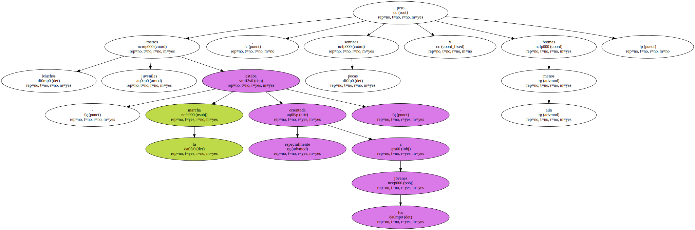El frío ambiental y la visita anterior a los barracones donde quizá murió alguno de los suyos , no daba para alegrías.
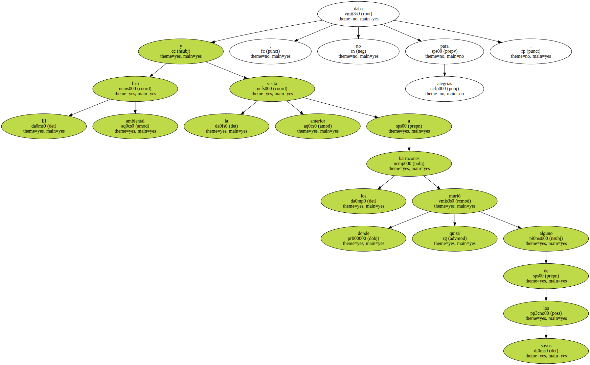La Marcha de los Supervivientes volvió sobre los pasos de lo que para el régimen nazi fue el Camino hacia la Muerte.
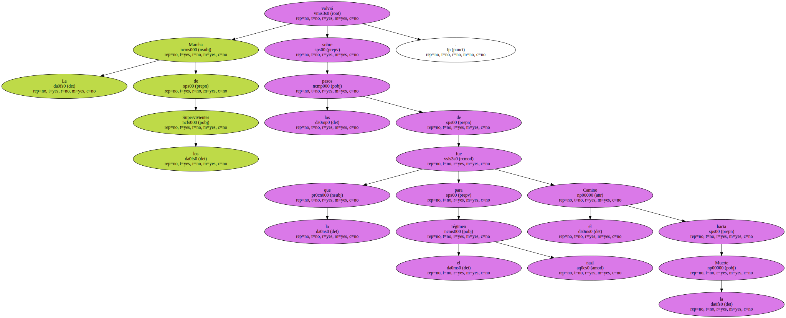- En Birkenau fue donde realmente se consumó la matanza en masa.
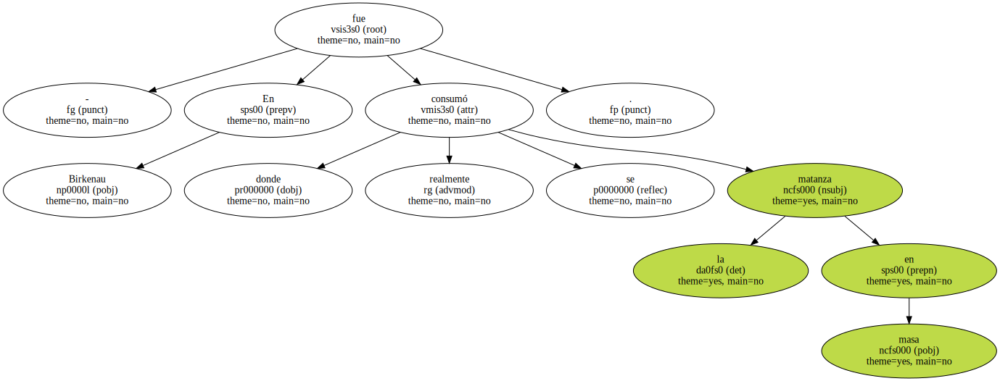Al campo de confinamiento , como le llamaban los nazis , venían los elegidos.
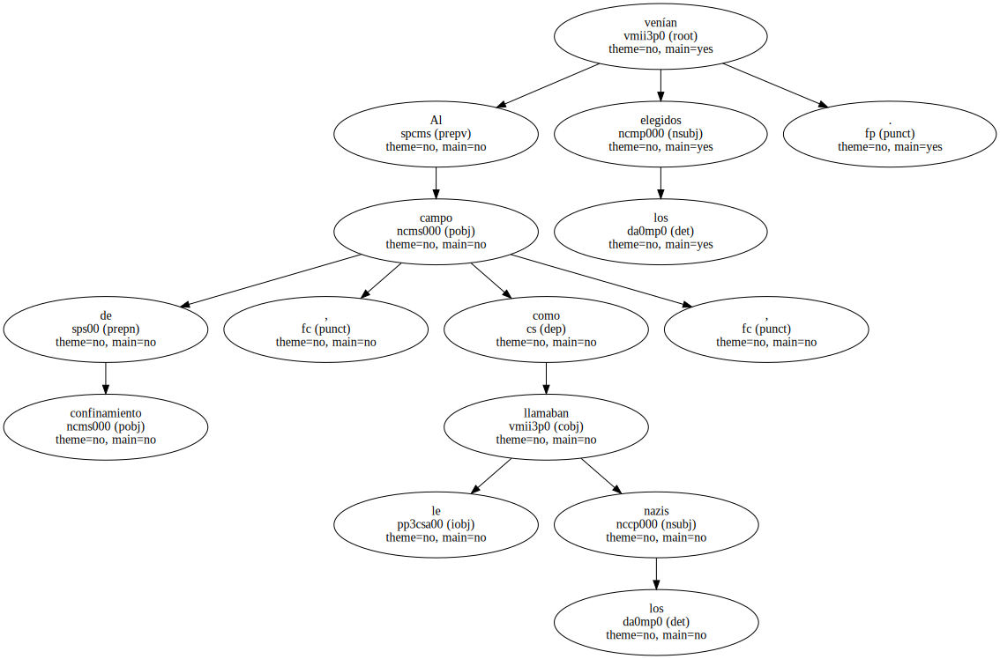Intelectuales , profesionales , casi diría que algunos recomendados.
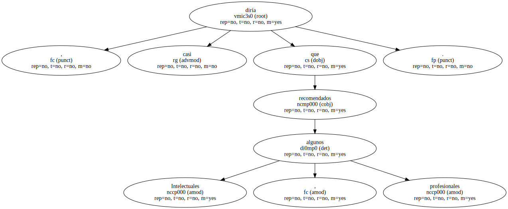Por eso se molestaban en marcarles un número en el brazo.
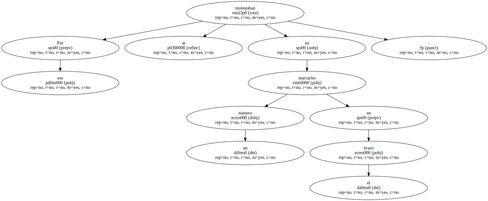A los que llegaban a Birkenau no merecía la pena identificarles : se les incineraba directamente -.
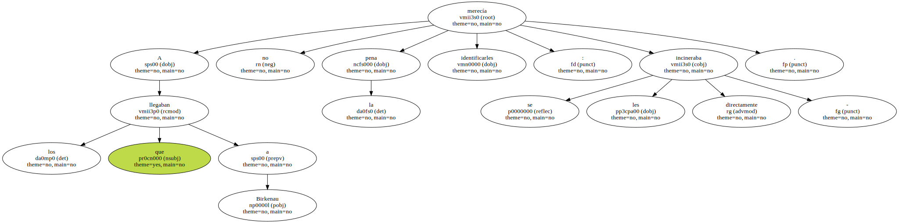Jonas S. , de 68 años y llegado de California , confiesa que todo esto lo sabe de oídas.
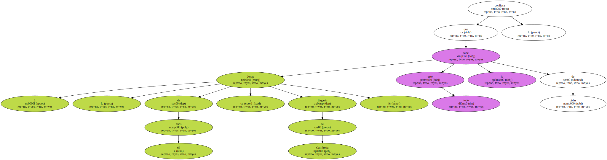Él y toda su familia fueron de los afortunados que huyeron de Alemania - antes de la locura -.
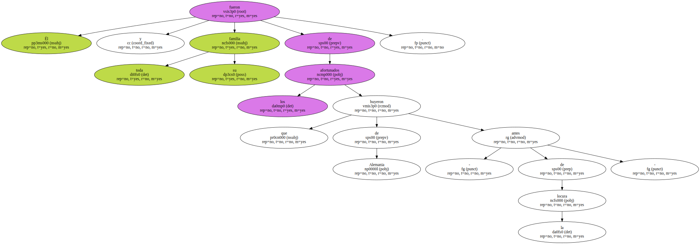La Marcha de los Supervivientes cumple desde hace ocho años con su cita en Auschwitz puntualmente.
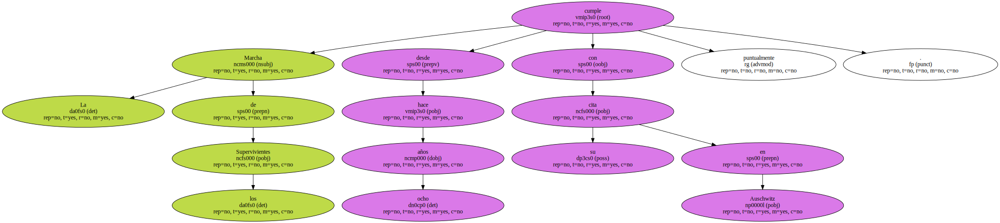El próximo será especial : se cumplirán 50 años de la liberación del campo por el Ejército Rojo.
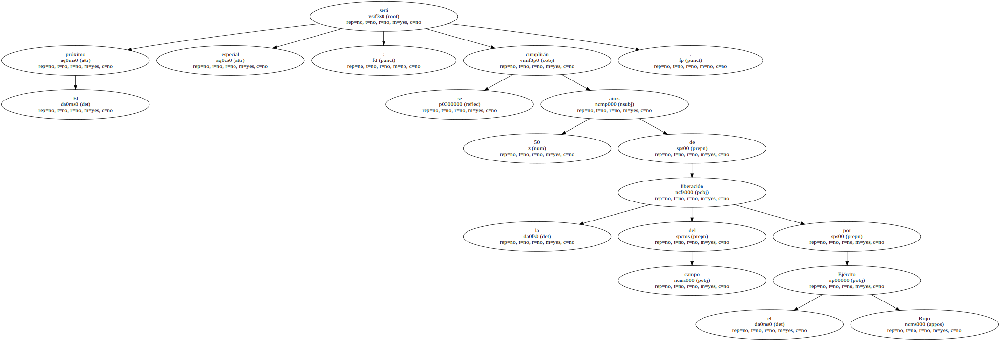Cada marcha tiene su propia razón de ser , dice la señora Greenberg.

- Lo único que ocurre es que una cámara atrae otras cámaras : la de Spielberg arrastra a las de la televisión , y éstas a las de los curiosos - , comenta uno de los vigilantes del campo de concentración - museo de Auschwitz.
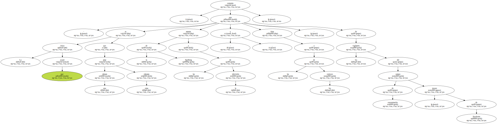El largo desfile de rostros juveniles no se deja llevar tampoco de sentirse algo protagonista de la odisea contada por el director americano.
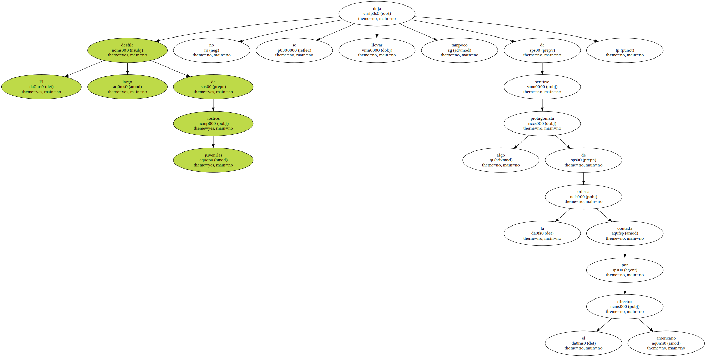- Hizo un buen trabajo con La lista de Schindler pero no pudo evitar dejarse llevar por los tics hollywoodienses -.
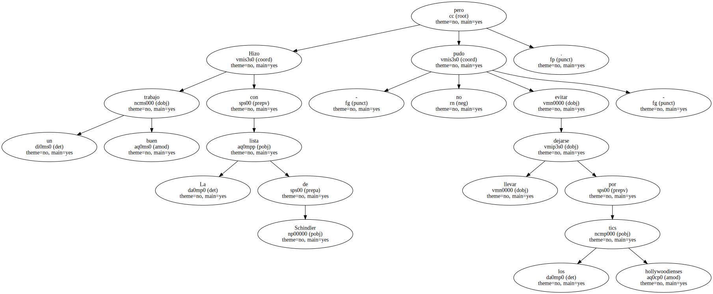